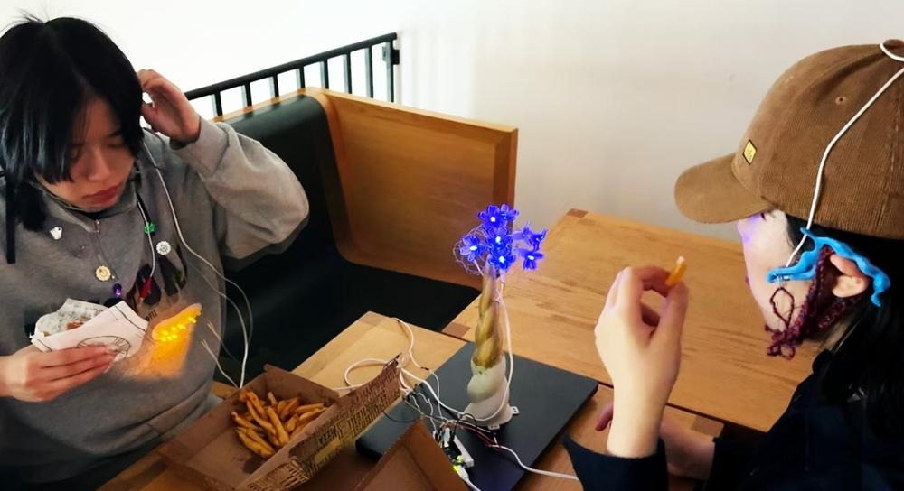
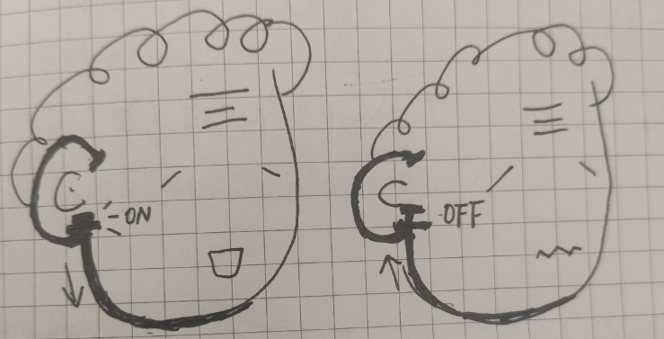
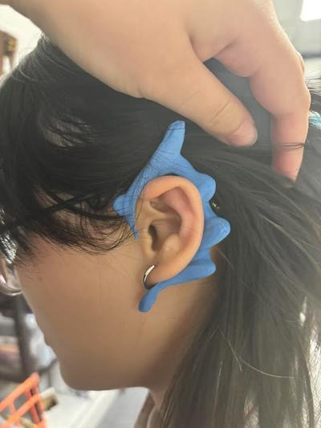
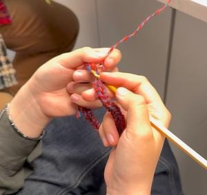
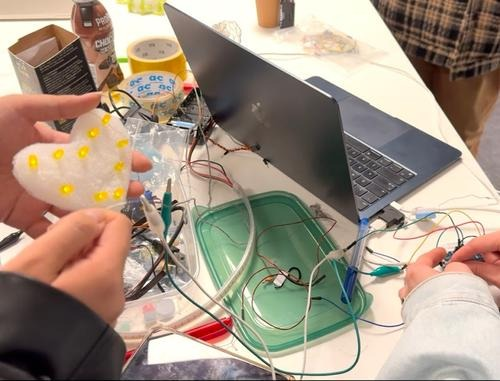
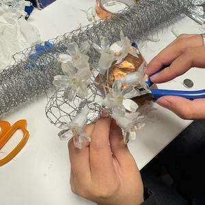

Background
Many older adults with mastication disorder and dysphagia face not only physical challenges but also emotional isolation during meals. Our design reimagines eldercare through a solarpunk lens, using soft, textile-based circuits to detect jaw movement and translate it into shared rhythm.
Rooted in solarpunk ideals, it envisions a future where technology fosters intergenerational connection at the table, restoring dignity without creating dependence.
Proposal
A comfortable, aesthetically designed wearable hooked around the ear and resting near the jaw. It monitors chewing rhythm, provides gentle vibration reminders, and supports swallowing rhythm regulation — discreet and stylish, avoiding the stigma of “medical equipment.”
A similar wearable worn while eating, tracking natural chewing rhythm. That real-time data is transmitted to the elderly person's device to generate soft, rhythmic stimulation, encouraging them to chew and swallow with more confidence and ease.

Making
We 3D-printed two ear-hook components that align with the natural movement of the jaw, helping capture chewing motion accurately and enabling real-time communication between the chewing sensor and the breathing light system. To enhance the tactile and visual appeal, we wrapped the device in soft yarn — improving comfort while introducing a handcrafted, emotionally engaging aesthetic.




Reflection
Over the course of this project, we explored the subtle yet powerful connection between physical behavior and emotional communication. By translating the unconscious act of chewing into a visual, ambient expression through synchronized lighting, we aimed to reframe everyday moments — such as sharing a meal with loved ones — into emotionally resonant experiences. Through iterative design, material exploration, and user-centered thinking, we created a system that not only reacts to human behavior but also expresses warmth, connection, and empathy.